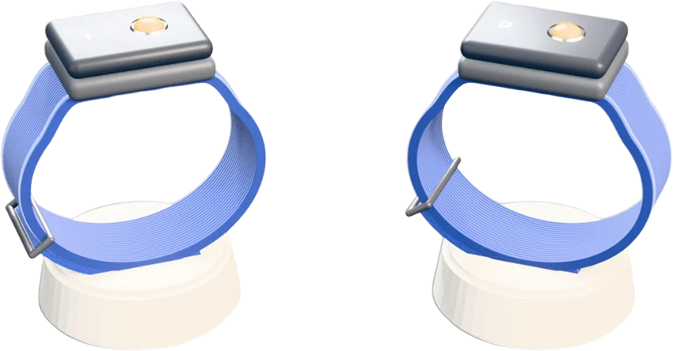

Tus pulseras
Antes de cada giro, vibra la muñeca de ese lado.

Conecta tu pulsera
Enciende la pulsera y elige en qué muñeca la llevas.
Muñeca izquierdaVira-L
Muñeca derechaVira-R
Pulsera únicaVira-1
Prueba de ruta
Trayecto en Santiago
Primer giro
Posición simulada© OpenStreetMap · OpenMapTiles · OSRM
Recorrido
Total
Giros
Sesión
Esperando pulsera confirmada.
Última señal
IzquierdaDerecha
Sin avisos
¿Qué lado sintió?
Cambiar prueba o trayecto
El mapa recorre el trayecto a 10×. Los avisos llegan por Bluetooth a tu pulsera.
Con las pulseras puestas y el vehículo detenido, el participante dice qué lado sintió sin mirar. El operador registra la respuesta.
Elige la muñeca que debe vibrar. Cada toque envía tres pulsos.